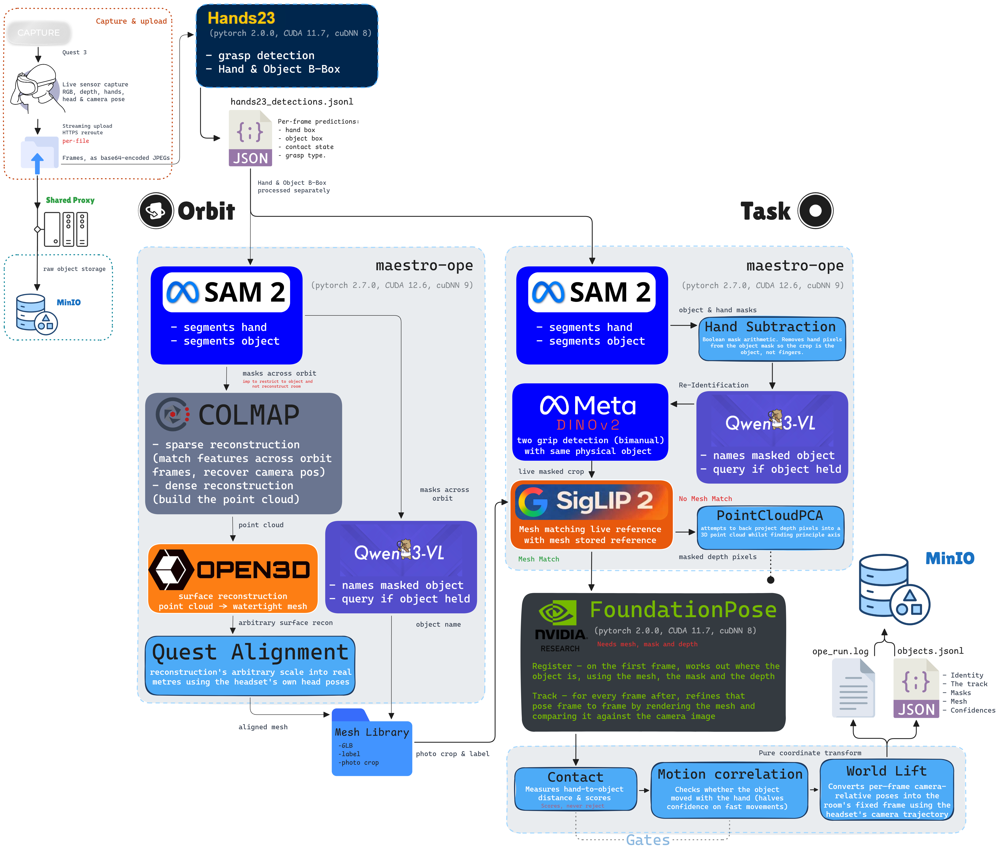

M.AI.ESTRO VR: full technical audit and measurements
This appendix keeps the detailed evidence, recovery notes, corrected evaluation details and original findings separate from the presentation audit page.
Pipeline Diagram
The pipeline PNG shows the flow from headset capture to stored object evidence, with separate task and orbit branches. Open the full-resolution image to inspect individual labels; the PDF gives the complete diagram its own landscape A3 page.


Pipeline Modules
Each node has a narrow responsibility. The audit question is whether the handoff between nodes is reliable enough for replay.
- 1
Quest capture
Records RGB, depth, headset pose and hand pose for task and orbit sessions.
- 2
Ingestion and MinIO
Accepts uploads, stores raw inputs and exposes session artifacts for worker processing.
- 3
Hands23 hand detection
Provides hand/object contact evidence and candidate boxes before object processing begins.
- 4
SAM2 segmentation
Turns candidate evidence into masks for orbit reconstruction and task-frame object tracking.
- 5a
PointCloudPCA
Provides model-free task pose estimates when a trusted mesh is not available.
- 5b
FoundationPose with mesh
Runs when a suitable mesh, mask and depth are available; this is the stronger route for mesh-backed replay.
- 6
Qwen labels
Supplies an object label from the crop; useful, but still dependent on mask quality.
- 7
DINOv2 and SigLIP
Support visual identity checks. The current audit keeps DINOv2 and SigLIP rather than adopting DINOv3.
- 8
COLMAP mesh reconstruction
Reconstructs object meshes from orbit capture frames for canonical mesh-backed replay.
- 9
Headset replay
Consumes stored objects, tracks, meshes and masks so captured objects can be inspected in VR.
Detailed corrections and measurements
Two demo blockers addressed
PointCloudPCA rejects estimates more than 0.5m from the nearest available wrist/palm during a confirmed grip, producing no pose for that frame. Pipeline wiring uses current-frame world landmarks and the actual grip interval, including during orbit capture. Missing landmarks cannot be checked. Tests cover good estimates, metre-scale outliers, coordinate transforms and task/orbit integration.
For ep067 only, the stored bounding box was corrected from (0.1548, 0.1714, 0.111)m to the served oclock02 mesh extents, (0.22261, 0.11664, 0.08314)m. The bbox is stored in MinIO JSONL; the session database metadata revision was bumped. The live API returned HTTP 200 with meshes/oclock02/mesh.glb. Headset rendering was not physically verified in that specific check.
Recovered data and corrected DINOv3 evaluation
The five overwritten recordings ep036, ep024, ep042, ep029 and ep049 were rerun through the current production worker, with backups and staged validation before publication. Audit checks additionally reran ep040, ep044 and ep046. Non-empty, structurally valid output does not guarantee a correct mask: ep046 still covers background, and ep040 has overlapping hand-track segments stored out of timestamp order.
Decision: retain DINOv2 for re-ID and SigLIP; leave automatic mesh matching disabled. Actual independent hand crops were measured for both smaller DINOv3 variants. At the existing 0.82 visual threshold, DINOv2-S passed 3/4 positive pairs; DINOv3-S and B passed 2/4 each. These are visual-feature comparisons, not complete spatial/time-gated merge outcomes.
| Two-hand recording | DINOv2-S | DINOv3-S | DINOv3-B |
|---|---|---|---|
| ep030 | 0.9081 | 0.8681 | 0.8499 |
| ep037 | 0.1305 | 0.1260 | 0.0557 |
| ep048 | 0.8312 | 0.5713 | 0.4966 |
| ep053 | 0.8939 | 0.9226 | 0.9127 |
The corrected source cohort enumerates 23 sessions: 15 genuine object queries, seven empty/no-query recordings and one deliberate fake with a false detection. Empty outputs were not counted as successful encoder rejections. The historical 11-query subset is reported separately.
| Image-matching method | Historical 11 correct decisions | All 15 genuine queries |
|---|---|---|
| SigLIP image-only | 4/11 | 7/15 |
| DINOv3-S dense | 5/11 | 8/15 |
| DINOv3-B dense | 5/11 | 7/15 |
| DINOv3-B foreground sensitivity | 10/11 | 13/15 |
Correct decisions include correct identity matches and correct absent-library rejections at the unchanged 0.55 threshold. Foreground B improves retrieval but falsely assigns meshes to an absent pen and remote at 0.6276 and 0.5744, above a true bottle match at 0.5566. Excluding ep022 thumbnail-source leakage and ep046 bad mask leaves 11/13 correct, with the same two false assignments. Reliable automatic identity assertion remains unresolved.
Measured loaded parameters are 22.06M for DINOv2-S, 203.16M for SigLIP including its text tower, 21.60M for DINOv3-S and 85.66M for B; the current pair totals 225.21M. FP32, batch-one L40S median forward times were 4.861ms, 5.563ms (SigLIP image branch), 4.798ms, 5.707ms and 10.451ms for the pair image/re-ID forwards.
The corrected full evaluation contains model revisions, negative-pair results, methods, licence conditions and unchecked scope. Code continuity records the demo fixes and recovery evidence. No production encoder replacement was made.
Original findings snapshot
The sections that follow reproduce the supplied Markdown findings. Historical mesh-matching counts and bimanual scores should be read alongside the corrected evaluation above. Projection dates are draft planning assumptions, not measured commitments.
Prepared for the Monday audit. Current source state: 2026-10-01.
This document separates measured facts from inferred constraints. Every claim below is tied to a memory file or repo handover.
1. What the system does
M.AI.ESTRO VR is a Quest 3 mixed-reality capture system for manual task data. It records RGB, depth, hand poses, camera poses, and object evidence, then runs an object and pose extraction pipeline on the GPU cluster. [source: HANDOVER.md, PLANNER_BRIEF.md]
There are two capture routes:
- Task mode: the user manipulates an object naturally. The pipeline detects a grip and writes a dataset episode with RGB video, hand poses, object track, grasp timestamps, grasp type, confidence fields, and a mesh reference when available. [source:
HANDOVER.md,acceptance_test_batch4_2026_09_30.md] - Orbit mode: the user records an object for mesh construction. The working route is now grip-first: grip briefly at the start, then orbit slowly. Hands23 detects the initial grip, SAM2 propagates the mask, and masked COLMAP plus Open3D build a metric mesh when the object's surface supports photogrammetry. [source:
orbit_grip_first_route_2026_09_30.md,orbit_capture_rule_2026_10_01.md]
The target use is a task dataset for replay, ghost-hand guidance, and later robot translation. The current dataset representation is still one rigid object track per object. [source: PLANNER_BRIEF.md, object_state_articulation_direction_2026_10_01.md]
2. What was fixed
Hand geometry and mask prompting
-
Hand joint table corrected, 2026-09-23. The project had treated joint 0 as wrist, but the recorded Quest OpenXR layout has joint 0 as Palm and joint 1 as WristRoot. The wrong table put SAM2 negative prompts about mean 165.4 degrees off the true forearm direction, in 100.0% of measured frames. The rule now is to use the shared joint definitions rather than restating indices. [source:
hand_joint_layout_ground_truth.md] -
SAM3 removed from masking after a measured head-to-head, resolved 2026-09-26. On six hard sessions with the same point prompts, SAM3 failed catastrophically on both patterned clock sessions, selecting a flower on the clock face instead of the whole clock. SAM2 kept the object mask role. SAM3 was dropped from hand removal, and DetectionGate became Qwen-only. [source:
maestro_pending_decisions_2026_09_25.md,maestro_pipeline_restructure_plan_2026_09_23.md] -
Box seeding replaced by point-from-box. Hands23's object box marks the contact region, not the full object extent. The measured examples were a 129 x 67 box on a clock spanning about 220 x 360, and a 101 x 219 box on a much longer rolling pin. The fix derives a point from the box center and removes the hard object-box crop. This expanded ep024 from about 2-3k pixels to about 95k pixels and produced full-length rolling-pin masks around 43,918 pixels mean area. [source:
maestro_pending_decisions_2026_09_25.md] -
Hands23 hand-box negatives replaced joint-projection negatives for Hands23 events. A real
run_ope.pysmoke test found that the SAM3-removal path left old joint-projection negatives active, collapsing ep039 to an empty mask on every frame. The fix uses five negative points from Hands23's own hand box when available. The three-variant test showed joint negatives produced empty masks, while hand-box negatives produced consistently good masks. [source:maestro_pipeline_restructure_plan_2026_09_23.md]
Grasp candidate generation and live wiring
-
Hands23 adopted as the candidate generator on measured evidence. Before live wiring, measured validation showed 9/9 real grips accepted and 6/6 negatives rejected on 15 out-of-sample sessions. Real grips were 2.1-5.6s, negatives were 0.7-1.2s, and the 1.5s threshold sat between them. Both duration and grasp-class filtering were load-bearing. [source:
maestro_pending_decisions_2026_09_25.md] -
The major live-worker gap was found and then fixed, 2026-09-30. Batch 3 proved that the deployed task pipeline produced zero candidates on all 9 real task-mode uploads, silently, while the manual validation path had passed. Cause:
candidate_sourcedefaulted to Hands23, buthands23_candidates.pyhad never been wired intoserver/ope_runner/worker.py. The silent half was fixed first withHands23NotPrecomputedError; then Hands23 was wired as an HTTP service called by the worker beforerun_ope.py. [source:validation_harness_vs_production_path_2026_09_30.md,maestro_pipeline_restructure_plan_2026_09_23.md,HANDOVER.md] -
Acceptance batch 4 passed after live wiring, 2026-09-30. Five real headset uploads ran with no manual precompute. All finished
ope_status='done', with zero failures, zero timeouts, and zero exceptions. Fakes ep061 and ep063 produced emptyobjects.jsonl, and real grips ep062, ep064, ep065 each produced one object. The distractor test ep065 wrote only the detergent bottle and ignored the visible clock and candle. [source:acceptance_test_batch4_2026_09_30.md] -
Grip-first orbit routing built, 2026-09-30. Capture-mode sessions now route through Hands23 when
candidate_source=="hands23", and_precompute_hands23no longer skips capture-mode sessions. Four new or updated tests passed in that work. [source:orbit_grip_first_route_2026_09_30.md,HANDOVER.md]
Labelling and object crops
- Labeller accuracy improved because crops improved, not because the model changed. The older contaminated-crop measurement was 3/6, about 50%. The reprocessed Hands23+SAM2 validation measured 15/16, about 94%, with the same model and checkpoint. Batch 3 salvage then measured 7/7 on real detections, and acceptance batch 4 measured 3/3, giving 10/10 on those fresh detections. The recorded conclusion is not to upgrade to Qwen3-VL-8B for this reason. [source:
maestro_pipeline_restructure_plan_2026_09_23.md,calibration_batch3_ground_truth_2026_09_30.md,acceptance_test_batch4_2026_09_30.md,PLANNER_BRIEF.md]
Meshes and pose tracking
-
FoundationPose was activated for real, 2026-09-23. It was already coded, but every prior session had fallen back to PointCloudPCA. Two gaps were found:
maestro-fp-serverwas on a GPU already about 90% consumed by another job, causing CUDA OOM, andCADModelProviderlooked for old OBJ files while the project had moved to GLB. After fixes, logs showed one/registercall and 100+ successful/trackcalls for the bottle session. [source:foundationpose_activated_2026_09_23.md] -
Depth-gap pose fabrication was fixed, 2026-09-24, commit
a238de9. Quest depth runs below RGB framerate, so some RGB frames have no depth. CAD tracking had been falling back to a hardcoded z=0.5m PCA guess on those frames, causing about 3.3m position teleports and near-180 degree apparent flips. The fix skips depth-less frames after registration instead of faking them. In the measured case, frame count went 94 to 89, exactly removing the five bad frames, andmotion_confidenceimproved from 0.0993 to 1.0. [source:maestro_pipeline_restructure_plan_2026_09_23.md,superpose_future_pipeline_decision_2026_09_23.md] -
The 10x mesh-scale mechanism was identified, and the registration path was guarded.
oclock01measured 2.07m for a real clock of about 18cm;obottle01measured 2.04m for a real bottle of about 27cm. The cause was mesh scale, not coordinate convention. The older entries remain unrepaired, but the later registration bug around selecting the non-metric mesh variant was fixed on 2026-09-24; new registrationsocandle01andoclock02were scale-verified and read back. [source:maestro_pipeline_restructure_plan_2026_09_23.md,maestro_pending_decisions_2026_09_25.md,orbit_grip_first_route_2026_09_30.md,HANDOVER.md] -
Grip-first orbit produced two registered metric meshes. ep066 candle registered as
ocandle01on 2026-09-30, with mask IoU median 0.712 and Quest-alignment residual mean 6.4mm. ep067 clock registered asoclock02on 2026-10-01, with mask IoU median 0.960 and residual mean 4.9mm. Both were scale-verified and read back. [source:orbit_grip_first_route_2026_09_30.md,HANDOVER.md]
Capture metadata and confidence signals
-
Hand tracking confidence logging was added, 2026-09-23. The project confirmed a case where the Quest hand position was about 30cm wrong during an occluded grip, while the projection math was correct on a visible control frame. At that time
poses.jsonlhad no confidence fields. The capture build now records whole-hand confidence, tracked-valid flags, and per-finger confidence arrays per hand. [source:hand_tracking_occlusion_dropout_2026_09_23.md] -
The confidence signal was then observed during a real grip attempt, 2026-09-30. In ep060, right per-finger confidence dropped for about 1.5s, overlapping almost exactly with Hands23's detected contact window. Whole-hand booleans stayed true, so per-finger confidence is the signal that matters for this failure. [source:
calibration_batch3_ground_truth_2026_09_30.md] -
capture_modenow reaches the system. A server-side fix refreshescapture_modefrom the final uploadedmeta.jsonatstream_finalize; this was first verified synthetically after rebuild. The first real-device confirmation was ep051 landingcapture_mode='orbit'in the database. [source:maestro_pipeline_restructure_plan_2026_09_23.md,calibration_batch3_ground_truth_2026_09_30.md]
Operational hardening
- Transient GPU OOM retry/backoff was added, 2026-10-01. A session that fails because another tenant saturates the shared GPU now retries itself with 5 attempts and 1/5/15/30/60 minute backoff. ep072 self-recovered from two real OOMs with no manual requeue. [source:
HANDOVER.md, repo:tests/test_worker_oom_retry.py]
3. The validation finding
The most important methodological result is that five separate defects on 2026-09-30 had the same shape: code existed, tests or validations existed, but the code did not execute on the deployed path that mattered. [source: validation_harness_vs_production_path_2026_09_30.md]
The five recorded cases were:
- Point-from-box validation omitted the real production negative prompts.
- Box-constrained Hands23 seeding measured frame count, not whether masks covered the object.
- The SigLIP cache fix was checked by environment state, not by rerunning mesh matching end to end.
- Hands23 was adopted from a manual-precompute harness, while the live worker never produced
hands23_detections.jsonl. - A missing
pycolmapimport on the mesh-building host was swallowed and made COLMAP submodel selection silently choose the wrong branch.
This is a strength, not just a failure report. The team found it because it insisted on a fresh live sweep, rather than only reprocessing the archive. Batch 3 separated model performance from deployed-system performance. [source: validation_harness_vs_production_path_2026_09_30.md, calibration_batch3_ground_truth_2026_09_30.md]
The rule going forward is: a module is adopted when the live worker path can produce its input, unassisted, not when a config flag flips or a script works offline. [source: validation_harness_vs_production_path_2026_09_30.md, HANDOVER.md]
4. What is not fixed
-
Mesh matching is disabled by decision. The defensible measurement is 21 object-producing sessions, 11 mesh-resolve hits: 4 correct, 6 wrong, and 1 partial hit. The partial is ep031 Stanley tumbler matching
obottle01. Correct scores and wrong scores overlap, so threshold tuning is ruled out. The source also rules out a simple bigger-encoder answer because the measured signal is render style and crop framing, not object identity. Live runs are thereforemodel_freewhileOPE_MESH_RESOLVE_ENABLED=0. [source:maestro_pending_decisions_2026_09_25.md,maestro_pipeline_restructure_plan_2026_09_23.md,HANDOVER.md] -
Two reconstruction failure classes remain. Bottle and rolling pin fail at pairwise feature matching: median adjacent-frame verified matches are 0 for both bottle takes and the rolling pin, versus 28-355 for the two successes. The bowl is different: it has median 30 adjacent-frame verified matches and 81.7% adjacent pairs with any match, close to the candle, but fails later in global reconstruction, most plausibly due to concave/open shape. [source:
colmap_preflight_feature_density_2026_10_01.md] -
Fast grips reduce motion confidence. Two fast grips on different days and objects had
motion_confidence0.2469 and 0.2486, while two slow grips hadmotion_confidence1.000. Contact and detection confidence stayed at 1.0. The open question is whether the gate is correctly detecting weaker fast-motion evidence or is mismatched to short fast motions. [source:motion_correlation_gate_speed_finding_2026_09_30.md] -
Bimanual dedup is partly working, but its visual signal is unreliable. Reprocessing ep030, ep037, ep048, and ep053 through the Hands23 path showed all four generate two raw Hands23 candidates, one per hand. ReID clustering in
server/ope/reidentify.pyalready runs and merges against a fixed combined-score threshold of 0.82. The result was a 2-2 split: ep030 rolling pin and ep048 pen merged to one record, while ep037 rolling pin and ep053 marker did not merge and wrote two records. The discriminator was DINOv2 visual similarity between the two hands' independently chosen keyframe crops: 0.831-0.908 when it merged, 0.111-0.131 when it did not. Distance was not the discriminator, since all four same-object pairs were close at 0.005-0.086m. So this is not a missing feature; it is a working mechanism fed an unreliable same-object visual signal. [source:calibration_batch3_ground_truth_2026_09_30.md,maestro_pipeline_restructure_plan_2026_09_23.md] -
Two old library entries remain oversized.
oclock01andobottle01remain about 10x too large and should not be trusted as-is. The new registration path is fixed for later meshes, but these old entries were not re-registered. [source:HANDOVER.md,maestro_pending_decisions_2026_09_25.md] -
The fully automatic orbit seeder is parked. Option D stands at 1 hit, 20 misses, and 3 refusals out of 24 oracle frames. It found and fixed real bugs, but it is not wired into the pipeline and must not be confused with the working grip-first route. [source:
orbit_seeder_investigation_2026_09_30.md] -
Batch 3's old confidence band is not reliable. The original 0.14-0.61 confidence band from batch 3 cannot be verified against the original salvage run because those local results are gone and some MinIO copies were stale. Use later reprocessed values where available, and do not treat the old band as a firm audit number. [source:
calibration_batch3_ground_truth_2026_09_30.md,acceptance_test_batch4_2026_09_30.md]
5. Constraints
-
Shared GPU contention is real. FoundationPose initially failed because its container was placed on a GPU about 90% consumed by another job. Later, transient shared-GPU OOM required retry/backoff. This system is operating on shared hardware, not isolated production infrastructure. [source:
foundationpose_activated_2026_09_23.md,HANDOVER.md] -
Some ordinary objects cannot be photogrammetried by this route. The detergent bottle and rolling pin have near-zero adjacent-frame feature matches even with good coverage, so orbit/COLMAP is not universal. The system needs a user-visible verdict and alternate mesh routes for those objects. [source:
colmap_preflight_feature_density_2026_10_01.md,HANDOVER.md] -
The current representation is one rigid mesh and one 6DoF pose per object per frame. State changes such as a Stanley handle rotating, a spout moving, or a lock opening are outside what the system can currently represent. The agreed future direction is parts plus joints, with symbolic state derived from measurable joint values, but this is not implemented. [source:
object_state_articulation_direction_2026_10_01.md] -
Schema reservation is not needed today. The current JSON outputs are hand-built dicts and downstream readers use keyed
.get()or ignore unknown fields, so addingparts/jointslater costs the same as adding nullable fields now. The real later work is the single-mesh assumptions in onboarding, library entries, ingestion models, pose config, and Unity overlay. [source:object_state_articulation_direction_2026_10_01.md]
6. Ways forward, in priority order
-
Fix or replace mesh matching. This is the main gate on dataset volume. The next attempt must compare like with like and avoid the measured render-style/crop-framing confound. Do not treat threshold tuning or a larger encoder as supported fixes unless a new measurement says so. [source:
maestro_pending_decisions_2026_09_25.md,maestro_pipeline_restructure_plan_2026_09_23.md] -
Make reconstruction failure explicit. Add a three-outcome equivalent for mesh building: reconstruction succeeded, reconstruction failed as a retry-worthy bug, or this object is unsuitable for photogrammetry. Bottle and rolling pin need this now. [source:
colmap_preflight_feature_density_2026_10_01.md] -
Repair or remove
oclock01andobottle01. They are known-bad library entries. Re-register them, rescale from objectbbox_m, or remove them before any demo or dataset run can accidentally trust them. [source:HANDOVER.md,maestro_pending_decisions_2026_09_25.md] -
Investigate the fast-grip motion gate with fresh context. Read the gate's window and sample assumptions before changing it. The evidence shows a reproducible fast/slow split, but not the cause. [source:
motion_correlation_gate_speed_finding_2026_09_30.md] -
Harden bimanual deduplication. The mechanism exists, but DINOv2 visual similarity between independently cropped keyframes is unreliable. Any interval-overlap fix must include spatial proximity as a conjunct, not an alternative, or it will wrongly merge two different objects held one per hand at the same time. A negative recording of two different objects held simultaneously is needed before choosing a distance bound. [source:
calibration_batch3_ground_truth_2026_09_30.md,maestro_pipeline_restructure_plan_2026_09_23.md] -
Keep grip-first orbit as the production mesh route for now. It has produced two registered meshes. Keep automatic orbit seeding as parked research until there is a larger oracle and an explicit decision to resume it. [source:
orbit_grip_first_route_2026_09_30.md,orbit_seeder_investigation_2026_09_30.md] -
Defer articulated-state implementation until rigid tracking is trustworthy, then run the literature pass. When implemented, use parts plus joints, not free-text descriptors alone. [source:
object_state_articulation_direction_2026_10_01.md] -
Preserve the live-path validation rule. Every future default change should be tested through ingestion,
worker.py, and the live service dependencies, not justrun_ope.pyor a reprocess script. [source:validation_harness_vs_production_path_2026_09_30.md,HANDOVER.md]
7. Dataset construction projection
Graham must confirm these numbers before they are presented as a plan.
Task episodes can begin immediately in small labelled batches because acceptance batch 4 proved real headset uploads can produce task-mode objects with no manual precompute. [source: acceptance_test_batch4_2026_09_30.md, PLANNER_BRIEF.md]
Meshes currently work for textured objects through the grip-first route. The route produced ocandle01 and oclock02, but it does not solve low-texture objects or the bowl shape failure. [source: orbit_grip_first_route_2026_09_30.md, colmap_preflight_feature_density_2026_10_01.md]
Meaningful dataset volume is gated on mesh matching. The planner draft states: small labelled batches now; real volume in two to three weeks if matching is solved; longer if matching needs a new approach. Treat this as a projection, not a measured schedule. [source: PLANNER_BRIEF.md]
The current practical path is:
- Record small task batches now, with careful ground truth and live-path validation.
- Build meshes only for objects likely to reconstruct, using grip-first orbit and the capture rule.
- Exclude or separately route low-texture and concave/open-shape objects until mesh acquisition has explicit failure verdicts.
- Do not scale volume until mesh matching or its replacement can attach the right mesh without polluting the dataset.
Audit files and editable sources
The audit is filed under Maestro / VR in the dossier. Source files are kept alongside the review document so findings can be revised without losing the original evidence.
- Readable system audit · main presentation page
- Readable system audit PDF
- Original FINDINGS.md · unchanged source snapshot
- Pipeline PNG
- Refined pipeline PNG · editable Excalidraw · archived supporting asset
- 1 October pipeline PNG · editable Excalidraw
- Original DINOv3 evaluation log · historical, superseded measurements
- Original DINOv3 rerun log · records an interrupted thread
- Corrected S/B evaluation · detailed methods and results
- Code continuity · original repository handover
- Original-file SHA256 manifest